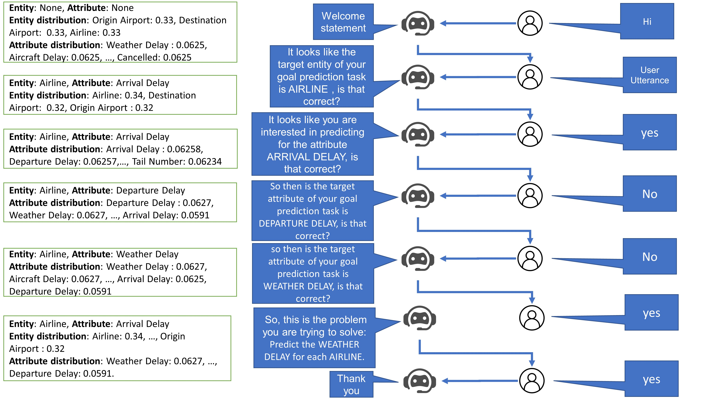
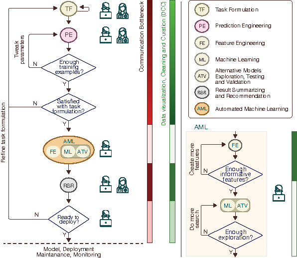

VIDS: Virtual Interactive Data Scientist
Here is our team :)
Overview of VIDS (a conversational AI agent to help with Data Science Tasks)
Automated machine learning (AutoML) is the process of automating the application of machine learning to real-world problems. The primary goals of AutoML tools are to provide methods and processes to make Machine Learning available for non-Machine Learning experts (domain experts), to improve efficiency of Machine Learning, and to accelerate research on Machine Learning. But although automation and efficiency are some of AutoML’s main selling points, the process still requires a surprising level of human involvement. A number of vital steps of the machine learning pipeline, including understanding the attributes of domain-specific data, defining prediction problems, creating a suitable training data set etc., still tend to be done manually by a data scientist or a machine learning engineer on an ad-hoc basis. How can we build an end-to-end automated pipeline of machine learning and enable domain experts to directly engage with the fascinating world of big data, and thus make the machine learning pipeline more efficient and appealing? We propose to address this question by laying out his vision for a Virtual Interactive Data Scientist (VIDS). VIDS can be thought of as an intelligent agent which, given a large corpus of data, starts talking to the domain experts like a human data scientist in order to quickly figure out the user’s need and explore alternative prediction opportunities. It will automatically formulate different prediction tasks, as well as explore alternative learning models to recommend the best one to the users.
Here is an example use-case of VIDS agent:
This is the high level architecture of VIDS agent:
 Link to source code